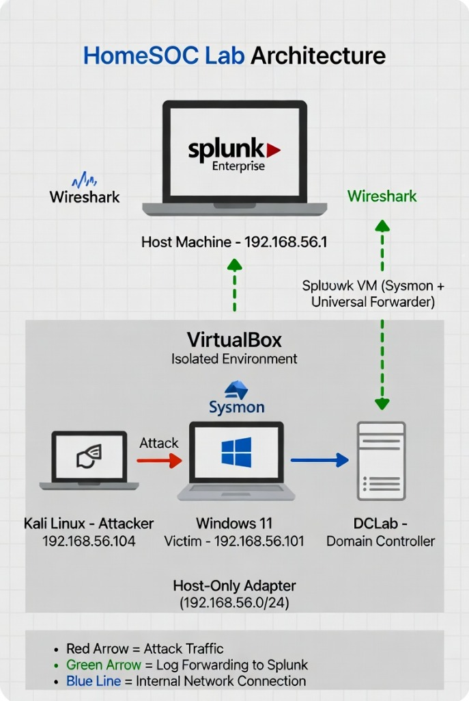

End-to-End SOC Simulation: Attack, Detect, and Respond
This HomeSOC Lab is a complete, self-built cybersecurity environment where I simulated realistic attacks against a Windows endpoint, detected them using enterprise-grade tools, and documented the full incident response process — exactly as a Tier 1/2 SOC Analyst would.
By combining Kali Linux as the attacker, a hardened Windows 11 victim, Splunk as the SIEM, and Wireshark for packet analysis, I created a closed-loop pipeline that demonstrates practical skills in threat simulation, log management, detection engineering, and incident handling.
The lab was built as an isolated environment to ensure safety while allowing for realistic threat simulation. I used VirtualBox to create a private network where the attacker and victim could interact without affecting my actual home network.

I executed a series of five connected attacks to see how a small incident can escalate into a full system compromise. Each phase was documented with practical steps and technical evidence.
After finishing the attacks, I built two advanced Splunk dashboards to visualize the security events and provide a high level overview of the lab activity.
Most candidates only list tools on their resume. This lab allowed me to own the entire process from building the environment and launching controlled attacks to writing custom detections and documenting incidents. It directly mirrors real SOC workflows and has strengthened my ability to think like both an attacker and a defender.